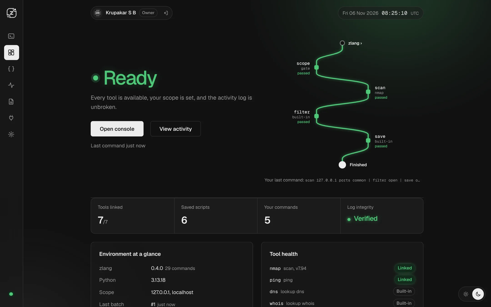
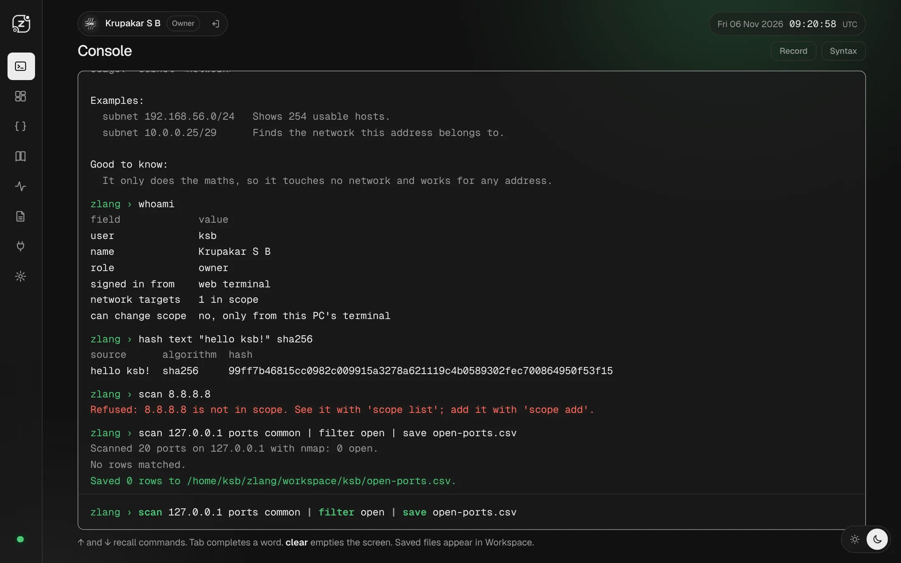
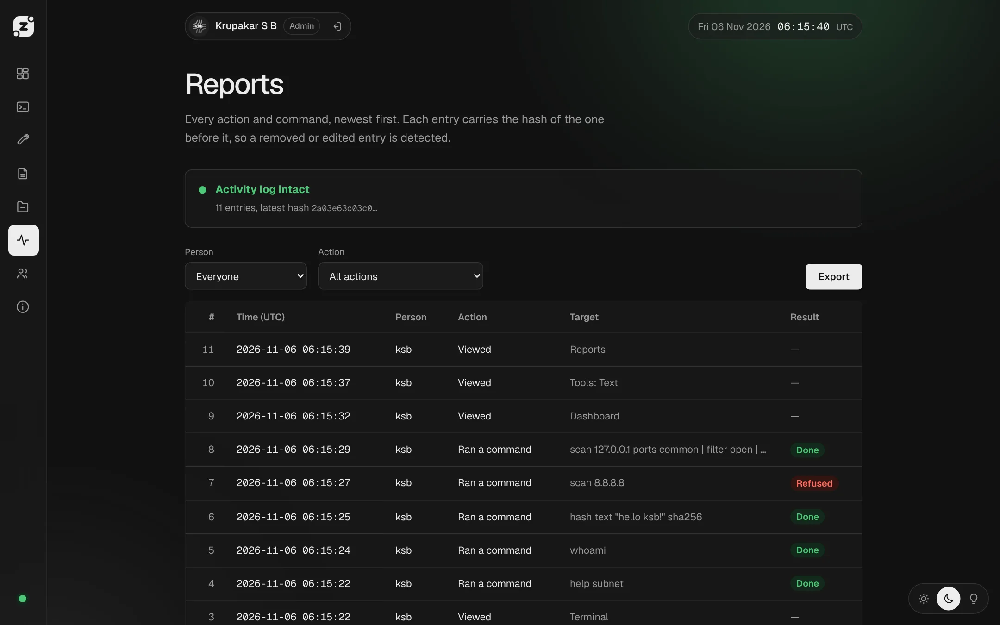
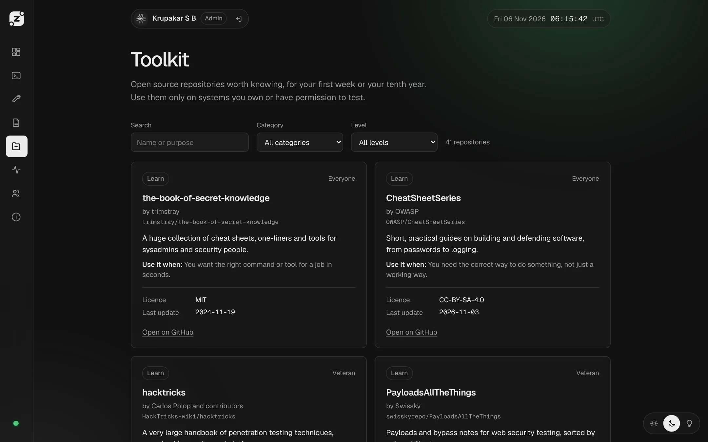

Readable for beginners
Short commands that hide tool complexity, such as hash file report.pdf or lookup dns localhost.
Krupakar S Bilichod
I'm a B.Tech Cyber Security student. I build zlang, a small language for security work, and I'm on the team building Hasfragis, a forensics toolkit.
One clean front page for security work, with the tools kept behind the curtain: a short, readable language with a full-screen console, ready-made scripts and a local dashboard, with a safety check in front of every network command.
zlang › scan 127.0.0.1 ports common | filter open | save results.csv
Short commands that hide tool complexity, such as hash file report.pdf or lookup dns localhost.
Pipelines, variables, .zl scripts, history and Tab completion, in the terminal or the browser.
Network commands only touch targets in a scope file you control. Anything else is refused and logged.
Every action joins a hash chain, so an edited or removed entry is detected. Reports export as PDF, Markdown, CSV and JSON.
zlang is written in Python with a Flask dashboard that runs on your own machine. The source is private for now.
A small demo of the language, running only in your browser. Nothing you type is sent anywhere. Network commands are switched off here, so try one and see the refusal.
zlang demo. Type help to see the commands.
The zlang dashboard runs locally. These are real screens from it.




Personal project
A language, interpreter and dashboard for security work, built and run by me.
Team project, private repository
A digital forensics toolkit that makes evidence tamper-evident and checkable. I'm a team member.
For anything about me or zlang.